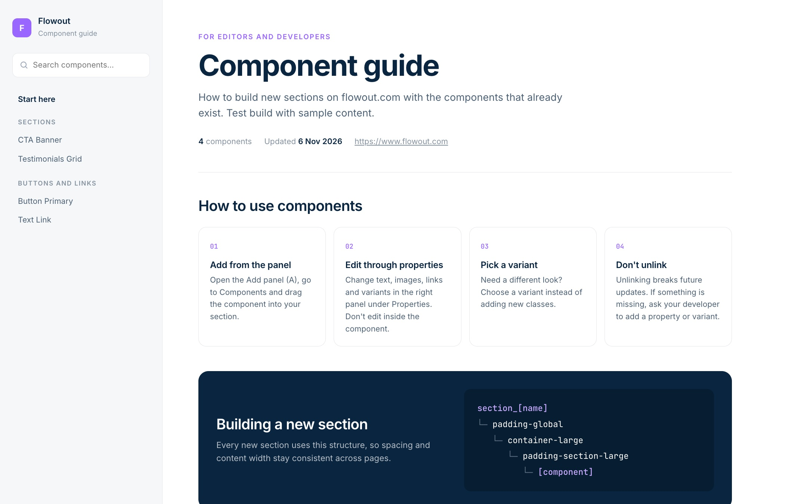
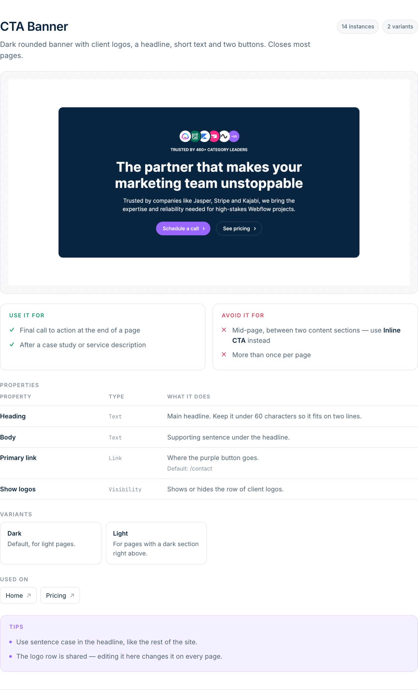

Vodič po komponentah za stranko. En HTML, ki ga odpre, ko gradi nove sekcije.

Po predaji projekta stranka sama dela nove strani. Brez vodiča ugiba, katero komponento vzeti in kako jo nastaviti.
Komponento odklopi, da spremeni en tekst. Od takrat ne dobiva več posodobitev.
Izgled spremeni z novim classom, čeprav varianta za to že obstaja.
"Katero komponento naj vzamem za to?" Odgovarjamo enkrat v vodiču, ne vsakič posebej.
Screenshot prave komponente, ne skice.
Z linkom na boljšo komponento, če obstaja.
"Besedilo na gumbu", ne "String prop".
Kdaj katero varianto in kje jo vidiš v živo.

Komponente, propi, variante, število uporab in strani, kjer so.
Vsako komponento posname z objavljene strani. Animacije in cookie bannerje umakne.
Opis, uporaba in lastnosti. Piše samo to, kar vidi v projektu.
Fiksna predloga zgradi vodič. Slike so vgrajene, vse je v eni datoteki.
Pošlješ jo po mailu ali daš v Drive. Stranka ne rabi dostopa do ničesar.
Komponente po skupinah, iskanje po imenu in namenu.
Barve in pisava iz variabel projekta.
Postavitev se prilagodi, tabele gredo v vrstice.
Angleščina ali slovenščina, vedno ista struktura.
Napišeš /webflow-components-guide. Rabiš povezan Webflow MCP.
Poveš javni URL za screenshote in jezik stranke.
Pregledaš seznam "Za pregled" in pošlješ vodič.
Screenshoti delujejo samo brez gesla. Na zaščitenem stagingu vodič pokaže linke namesto slik.
Se v posnetku včasih ne naložijo. Agent zato posnetke pregleda.
Opise piše agent. Pred pošiljanjem stranki jih potrdi developer na projektu.
Posnetki in HTML so testirani na flowout.com, celoten tok na projektu še ne.